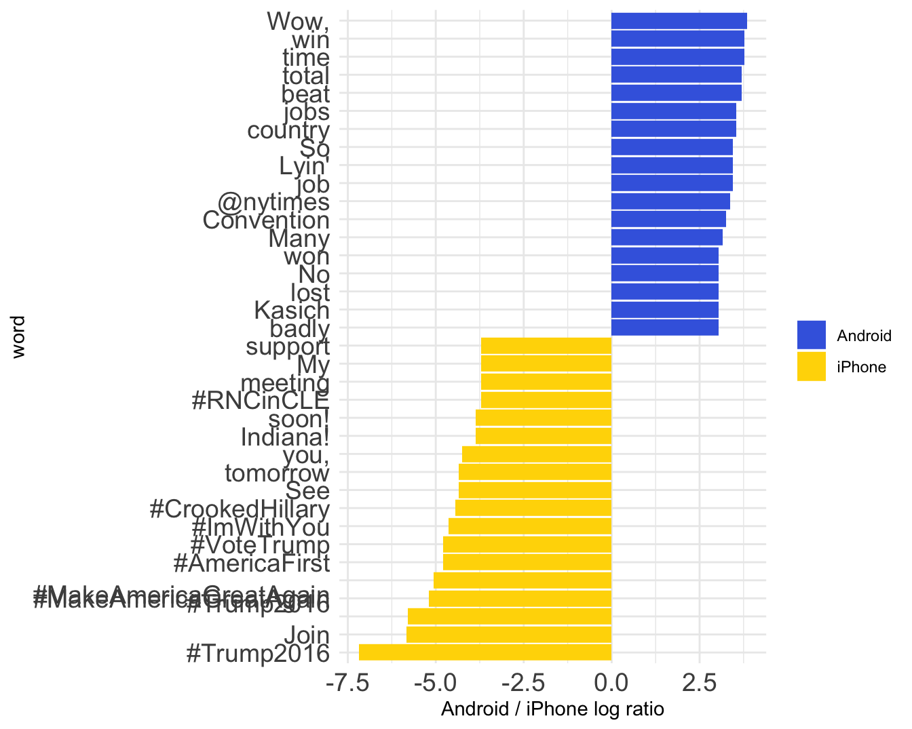

Chapter 9 Text Processing
9.1 Tweets 分析
應用dplyr和ggplot做社群輿論資料（tweets）的探索性分析，其中除了dplyr和ggplot外，尚用到文字處理（stringr, extract()）、時間處理（lubridate），甚至包含一點keyness分析，為找出兩個群體文本中，對彼此相對突出關鍵字的文本探勘方法。
本範例取材自David Robinson的blog文章「Text analysis of Trump’s tweets confirms he writes only the (angrier) Android half」。David Robinson是「Text Mining with R」的共同作者， 可參考該書籍上的範例「7 Case study: comparing Twitter archives | Text Mining with R (tidytextmining.com)」。
9.1.1 載入並清理資料
R4.0後stringsAsFactors=F變為預設值，便不用再另行用options()設為全域適用的參數。
library(tidyverse)
library(lubridate)
options(scipen = 999)
th <- theme_minimal() +
theme(plot.title = element_text(size=24, face="bold"),
legend.title = element_text(size=18, face="bold"),
legend.text = element_text(size=18),
axis.title = element_text(hjust=0.5, size=18,
face="italic"),
axis.text = element_text(size=18)
)
new_style <- function() {
font <- "Helvetica"
theme(
plot.title = element_text(family=font,
size=28, face="bold"),
plot.subtitle = element_text(family=font,
size=22,
margin=margin(9,0,9,0)),
plot.caption = element_blank(),
legend.position = "top",
legend.text.align = 0,
legend.background = element_blank(),
# legend.title = element_blank(),
legend.key = element_blank(),
legend.text = element_text(family=font,
size=18,
color="#222222"),
axis.text = element_text(family=font,
size=18,
color="#222222"),
axis.text.x = element_text(margin=margin(5, b = 10)),
axis.ticks = element_blank(),
axis.line = element_blank(),
panel.grid.minor = element_blank(),
panel.grid.major.y = element_line(color="#cbcbcb"),
panel.grid.major.x = element_blank(),
panel.background = element_blank(),
strip.background = element_rect(fill="white"),
strip.text = element_text(size = 22, hjust = 0)
)
}load(url("http://varianceexplained.org/files/trump_tweets_df.rda"))
dim(trump_tweets_df)## [1] 1512 16names(trump_tweets_df)## [1] "text" "favorited" "favoriteCount" "replyToSN"
## [5] "created" "truncated" "replyToSID" "id"
## [9] "replyToUID" "statusSource" "screenName" "retweetCount"
## [13] "isRetweet" "retweeted" "longitude" "latitude"trump_tweets_df %>%
select(id, text, created, favoriteCount, retweetCount, statusSource) %>%
head(20)## # A tibble: 20 × 6
## id text created favoriteCount retweetCount statusSource
## <chr> <chr> <dttm> <dbl> <dbl> <chr>
## 1 7626698825… "My … 2016-08-08 15:20:44 9214 3107 "<a href=\"…
## 2 7626415954… "Joi… 2016-08-08 13:28:20 6981 2390 "<a href=\"…
## 3 7624396589… "#IC… 2016-08-08 00:05:54 15724 6691 "<a href=\"…
## 4 7624253718… "Mic… 2016-08-07 23:09:08 19837 6402 "<a href=\"…
## 5 7624008698… "The… 2016-08-07 21:31:46 34051 11717 "<a href=\"…
## 6 7622845333… "I s… 2016-08-07 13:49:29 29831 9892 "<a href=\"…
## 7 7621109187… "Tha… 2016-08-07 02:19:37 19223 5784 "<a href=\"…
## 8 7621069044… ".@L… 2016-08-07 02:03:39 19543 7930 "<a href=\"…
## 9 7621044117… "I a… 2016-08-07 01:53:45 75488 24663 "<a href=\"…
## 10 7620164261… "#Cr… 2016-08-06 20:04:08 23661 7903 "<a href=\"…
## 11 7619881643… "Hea… 2016-08-06 18:11:50 28069 8561 "<a href=\"…
## 12 7619369299… "Any… 2016-08-06 14:48:14 35205 13129 "<a href=\"…
## 13 7619310105… "Cro… 2016-08-06 14:24:43 36936 13250 "<a href=\"…
## 14 7618928294… "Hil… 2016-08-06 11:53:00 32716 9356 "<a href=\"…
## 15 7617735761… "Goo… 2016-08-06 03:59:08 34109 10385 "<a href=\"…
## 16 7617579885… "'Tr… 2016-08-06 02:57:11 19436 8066 "<a href=\"…
## 17 7617548986… "Tha… 2016-08-06 02:44:55 19330 5418 "<a href=\"…
## 18 7617118564… "DON… 2016-08-05 23:53:53 30869 16786 "<a href=\"…
## 19 7616938031… "Tha… 2016-08-05 22:42:08 19431 5681 "<a href=\"…
## 20 7616538754… "#Ma… 2016-08-05 20:03:29 27568 13869 "<a href=\"…9.1.2 萃取資料
- Extracting publishing device of tweets
# tidyr::extract()
# stringr::str_replace
trump_tweets_df$statusSource[1]## [1] "<a href=\"http://twitter.com/download/android\" rel=\"nofollow\">Twitter for Android</a>"tweets <- trump_tweets_df %>%
select(id, statusSource, text, created) %>%
# mutate(source = str_replace(statusSource,
# ".*Twitter for (.*?)<.*", "\\1")) %>%
# mutate(source = str_extract(statusSource, 'Twitter for (.*?)<')) %>% View
extract(statusSource, "source", "Twitter for (.*?)<") %>%
filter(source %in% c("iPhone", "Android"))
# Using stringr::str_replace() to mutate a new source variable, replacing tidyr::
# str(tweets)9.1.3 視覺化探索
9.1.3.1 發文時間
- Converting timezone
lubridate::with_tz() - Extracting hour of timestamp by
lubridate::hour() - Plotting number of tweets by hour
- Display y-axis as percentage by
scales::percent_format()
library(scales) # for percent_format()
# lubridate::hour()
# lubridate::with_tz()
# scales::percent_format()
toplot1 <- tweets %>%
count(source, hour = hour(with_tz(created, "EST"))) %>%
# group_by(source) %>%
mutate(percent = n / sum(n))
# ungroup() %>%
toplot2 <- tweets %>%
count(source, hour = hour(with_tz(created, "EST"))) %>%
group_by(source) %>%
mutate(percent = n / sum(n)) %>%
ungroup()
p1 <- toplot1 %>%
ggplot() +
aes(hour, percent, color = source) +
geom_line(size = 1) +
scale_color_manual(name = "Phone System",
labels = c("Android", "iPhone"),
values = c("royalblue", "gold")) +
scale_y_continuous(labels = percent_format()) +
labs(x = "Hour of day (EST)",
y = "% of tweets",
color = "") + theme_minimal()
p2 <- toplot2 %>%
ggplot() +
aes(hour, percent, color = source) +
geom_line(size = 1) +
scale_color_manual(name = "Phone System",
labels = c("Android", "iPhone"),
values = c("royalblue", "gold")) +
scale_y_continuous(labels = percent_format()) +
labs(x = "Hour of day (EST)",
y = "% of tweets",
color = "") + theme_minimal()
cowplot::plot_grid(
p1, NULL, p2,
labels = c("(a) Normalized by all", "", "(b) Normalized in group"),
nrow = 1, rel_widths = c(1, 0.1, 1)
)
9.1.3.2 發文附圖
- Filtering out tweets starting with
"(those tweets mention #realdonaldtrump) - Mutating new variable
pictureto indicate whether text has picture or not? - Counting
sourcebypicture - Plotting bar chart to compare difference between sources.
# library(stringr)
toplot <- tweets %>%
filter(!str_detect(text, '^"')) %>%
mutate(picture = if_else(str_detect(text, "t.co"),
"Picture/link", "No picture/link")) %>%
count(source, picture)
p1 <- toplot %>%
ggplot() +
aes(source, n, fill = picture) +
geom_col(position="stack", width = 0.5) +
scale_fill_manual(name = "With Picture/link?",
labels = c("Yes", "No"),
values = c("royalblue", "gold")) +
labs(x = "", y = "Number of tweets", fill = "") + theme_minimal()
p2 <- toplot %>%
ggplot() +
aes(source, n, fill = picture) +
geom_col(position="dodge") +
scale_fill_manual(name = "With Picture/link?",
labels = c("Yes", "No"),
values = c("royalblue", "gold")) +
labs(x = "", y = "Number of tweets", fill = "") + theme_minimal()
cowplot::plot_grid(
p1, NULL, p2,
labels = c("(a) Stacked", "", "(b) Dodged"), nrow = 1, rel_widths = c(1, 0.1, 1)
)9.1.4 Keyness
library(tidytext) # unnest_tokens()
library(stringr) # str_detect(), str_replace_all()
# View(test)
# stop_words$word
tweet_words <- tweets %>%
filter(!str_detect(text, '^"')) %>%
mutate(text = str_replace_all(text, "https://t.co/[A-Za-z\\d]+|&", "")) %>%
# unnest_tokens(word, text) %>%
# unnest_tokens(word, text, token = "regex", pattern = "[^A-Za-z\\d#@']") %>%
mutate(word = str_split(text, " ")) %>%
select(id, text, word, everything()) %>%
unnest(word) %>%
filter(!word %in% stop_words$word,
str_detect(word, "[a-z]"))
# View(tweet_words)tweet_words %>%
count(word, sort = TRUE) %>%
head(20) %>%
mutate(word = reorder(word, n)) %>%
ggplot(aes(word, n)) +
geom_col(fill = "royalblue") +
ylab("Occurrences") +
coord_flip() + theme_minimal() +
theme(axis.text = element_text(size=10))9.1.4.1 詞頻差異
test <- tweet_words %>%
count(word, source) %>%
filter(n >= 5) %>%
pivot_wider(names_from = source,
values_from = n,
values_fill = 0)
# View(test)
word_by_source <- tweet_words %>%
count(word, source) %>%
filter(n >= 5) %>%
pivot_wider(names_from = source,
values_from = n,
values_fill = 0) %>%
# spread(source, n, fill = 0) %>%
ungroup()
sum(word_by_source$iPhone)## [1] 1383sum(word_by_source$Android)## [1] 2132android_iphone_ratios <- word_by_source %>%
mutate(iPhone = (iPhone+1)/sum(iPhone+1)) %>%
mutate(Android = (Android+1)/sum(Android+1)) %>%
# mutate_at(.cols = vars(iPhone, Android),
# .funs = funs((. + 1) / sum(. + 1))) %>%
mutate(logratio = log2(Android / iPhone)) %>%
arrange(desc(logratio))9.1.4.2 視覺化log-ratio
android_iphone_ratios %>%
group_by(logratio > 0) %>%
top_n(15, abs(logratio)) %>%
ungroup() %>%
mutate(word = reorder(word, logratio)) %>%
ggplot(aes(word, logratio, fill = logratio < 0)) +
geom_col() +
coord_flip() +
ylab("Android / iPhone log ratio") +
scale_fill_manual(name = "", labels = c("Android", "iPhone"),
values = c("royalblue", "gold")) +
theme_minimal() +
theme(axis.text = element_text(size=14))